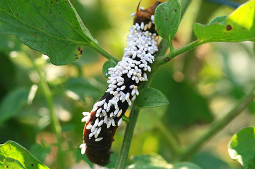

Muuseumi ekspositsioon on suletud uuendamiseks. Avame uuenenud ekspositsiooni 2014. aasta kevadel.
At vero eos et accusamus et iusto odio dignissimos ducimus qui blanditiis praesentium voluptatum deleniti atque corrupti quos dolores et quas molestias excepturi sint occaecati cupiditate non provident, similique sunt in culpa qui.
Nam libero tempore, cum soluta nobis est eligendi optio cumque nihil autem quibusdam et aut officiis debitis aut rerum necessitatibus saepe eveniet ut et voluptates repudiandae sint et molestiae non recusandae. Itaque earum rerum hic tenetur a sapiente delectus, ut aut reiciendis voluptatibus maiores alias consequatur au t perferendis doloribus asperiores repellat
- Ülikooli loodusmuuseum ootab seenenäitusele
- Eesti geoloogiliste vaatamisväärsuste koolitused õpetajatele ja õpilastele 2013. aasta sügisel
- Seminar "Toit, tervis ja keskkond - õppevahendid koolidele" 13. septembril Pärnus
- Tartu Ülikooli loodusmuuseumi kogud AHHAAs
- Telli loodusmuuseumi uudiskiri
- Tartu Ülikooli loodusmuuseum Facebookis!
Nädala pilt
